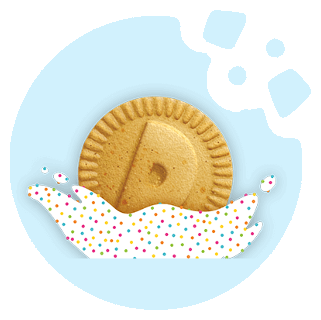
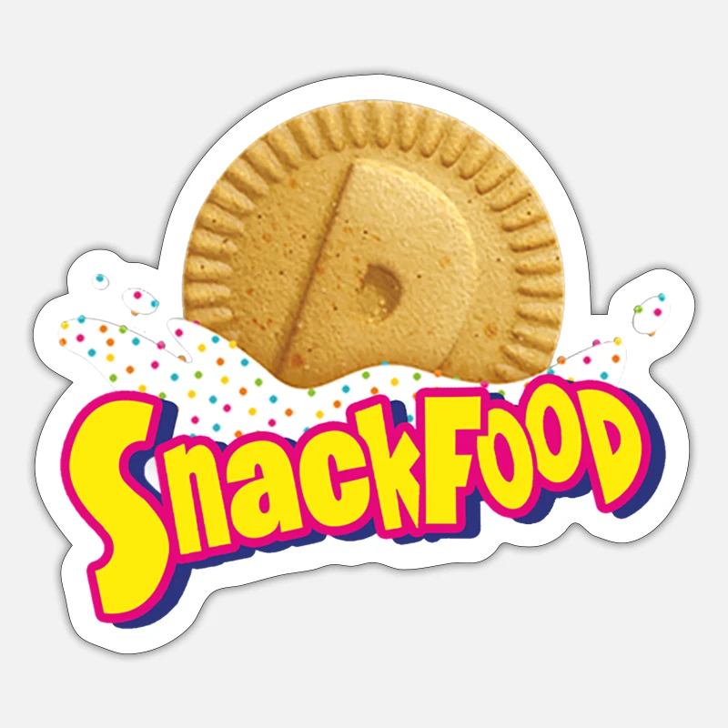

Information
Dunkaroos are a snack food from Betty Crocker, first launched in 1990. It consists of a snack-sized package containing cookies and frosting; as the name implies, the cookies are meant to be dunked into the frosting before eating. Individual snack packages contain about ten small cookies and one cubic inch of frosting. The cookies are made in a variety of shapes, including a circle with an uppercase "D" in the center (the only shape featured in the 2020 version), feet, the mascot in different poses, and a hot air balloon.
History
The history of Dunkaroos traces back to the 1990s and is associated with the General Mills company.The origin of Dunkaroos can be attributed to Australian entrepreneur Sylvester (Sylvio) R. H. Yacobucci. In the late 1980s, Yacobucci developed the concept of combining cookies with icing, providing a convenient and enjoyable snack that could be easily dipped. He named the product "Dunk-a-Roos," where "Dunk" implied the act of dipping the cookies, and "Roos" was a nod to kangaroos, an iconic Australian symbol.
Variety
Dunkaroos come in rainbow sprinkle frosting with vanilla cookies, vanilla frosting with chocolate cookies, chocolate frosting with graham cookies, strawberry frosting with vanilla cookies, and rainbow sprinkle frosting with chocolate chip graham cookies. Cookie dough, a cereal, yogurt, pancake mix, and a separate frosting pack also spawned from the 2020 version. Previously the cookies were cinnamon flavored. There was a special SpongeBob SquarePants edition, featuring yellow frosting. The cookies also collaborated with DreamWorks in 2010 to add varieties based on their movies, like Megamind and Shark Tale.
Owner
General Mills, Inc., is an American multinational manufacturer and marketer of branded processed consumer foods sold through retail stores. Founded on the banks of the Mississippi River at Saint Anthony Falls in Minneapolis, the company originally gained fame for being a large flour miller. Today, the company markets many well-known North American brands, including Gold Medal flour, Annie's Homegrown, Lärabar, Cascadian Farm, Betty Crocker, Yoplait, Nature Valley, Totino's, Pillsbury, Old El Paso, Häagen-Dazs, as well as breakfast cereals under the General Mills name, including Cheerios, Chex, Lucky Charms, Trix, Cocoa Puffs and Count Chocula and the other monster cereals.